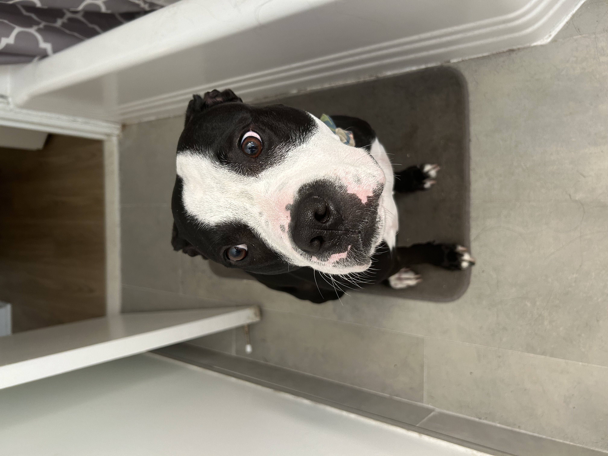
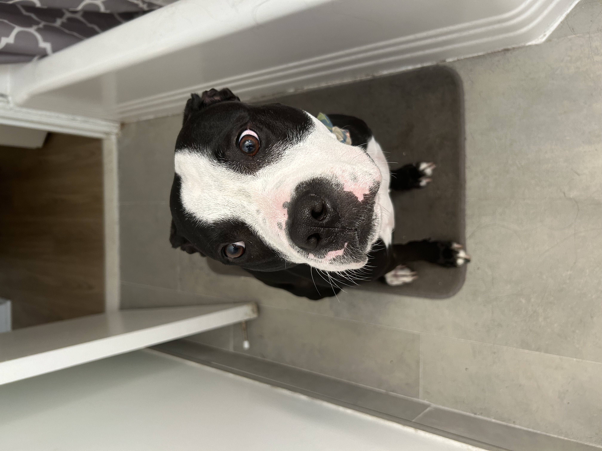
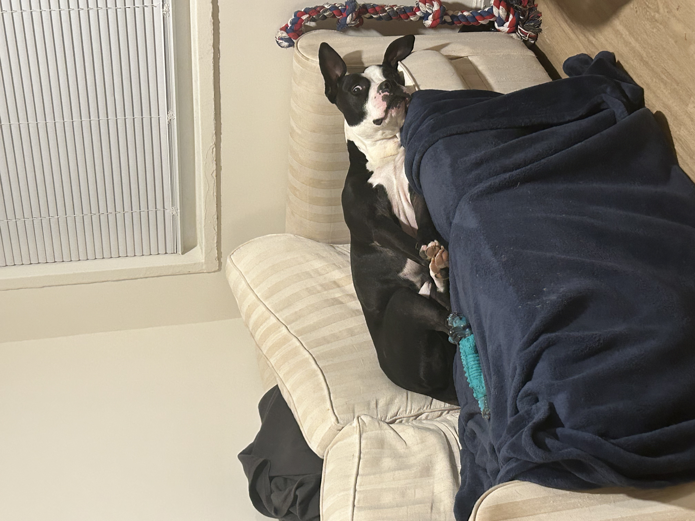

Are Pit Bulls Really Dangerous? My Story and the Science Behind Breed Discrimination
1 Introduction
Dogs are often called “man’s best friend,” but for Pit Bull Terriers, this bond is too often broken by breed-discriminatory legislation (BDL). In this piece, I explore the question: Are pit bulls really that dangerous? Along the way, I share my personal journey with Kay, my beloved American Pit Bull Terrier, and examine what science has to say about these misunderstood dogs.
 

1.1 How Did Pit Bull Discrimination Begin?
Pit Bulls have a long history with humans, originally bred in the United Kingdom in the early 1800s from Old English Bulldogs for bull and bear baiting. After such practices were banned in 1835, Pit Bulls were used in ratting contests, where they got their name from being placed in pits (Love-A-Bull).
When immigrants brought them to the United States, they became known as American Pit Bull Terriers, celebrated during World War I and II as the “All-American Dog” for their loyalty, bravery, and friendliness. However, public opinion began to shift in the 1970s after the U.S. outlawed dog fighting. Sadly, this led to Pit Bulls being bred for underground fights, with temperament and socialization ignored (Love-A-Bull).
By the 1980s, negative media portrayals fueled public fear, leading to breed-specific legislation (BSL) that targeted Pit Bulls and other breeds, often banning them from entire cities and states (Love-A-Bull). This history of stigma continues to affect Pit Bulls today, despite evidence showing they are no more dangerous than other breeds when properly cared for.
2 Meet Kay: A Personal Story
In April 2024, I adopted Kay, a black and white American Pit Bull Terrier, from a shelter in Washington, D.C. He had been the longest resident there, mainly because of his breed and history — a bite victim himself, Kay was reactive to other dogs. Despite his difficult start, he is sweet, loving, and loyal to me.
Unfortunately, pit bulls like Kay are often the first to be judged and the last to be adopted. Many apartments in the DMV area ban pit bulls outright, even mixed breeds. For dogs like Kay, these policies are a life sentence in shelters or worse.
Did you know? Black dog syndrome, also known as BDS, is a phenomenon in pet adoption in which black dogs are ignored in favor of light-colored ones (Murphy 2022).

3 What is Breed-Discriminatory Legislation (BDL)?
Breed-discriminatory legislation (BDL) refers to laws that ban or restrict dogs based solely on their breed — not their behavior. Although these laws claim to improve public safety, they often target specific breeds like pit bull terriers, German Shepherds, and Dobermans. Sometimes, they require expensive insurance or constant muzzling, making life impossible for both dogs and their families.
3.1 Does BDL Make Communities Safer?
üëâ No, it does not.
Multiple peer-reviewed studies and reviews, including those from the American Veterinary Medical Association (AVMA), have found no evidence that BDL reduces dog bites or makes communities safer. In fact, cities that enacted these laws saw no reduction in incidents (AVMA 2014). BDL-based policies are based on myths and misinformation instead of science or credible data, it further divert resources from more effective animal control and public safety initiatives (Humane World for Animals).
“There is no evidence that breed-specific bans reduce the rate or severity of bite injuries.” — AVMA Literature Review, 2014
4 Are Pit Bulls More Aggressive? Science Says No.
Contrary to popular belief, pit bulls are not inherently more aggressive than other breeds. Multiple studies show that breed is a poor predictor of dog aggression.
4.1 Evidence from Studies
A 2008 study in Applied Animal Behavior Science concluded: > “It is inappropriate to make predictions about a given dog’s propensity for aggressive behavior based solely on its breed.” (Duffy& Yuying&Serpell, 2008)
A study comparing Golden Retrievers and pit bulls found similar rates of aggression ((Ott et al., 2008).
(Ott et al., 2008) The AVMA review emphasized: > “Pit bull-type dogs are not implicated in controlled studies. It is difficult to support the targeting of this breed as a basis for dog bite prevention.” (AVMA, 2014)
5 Media Bias and Misidentification
The media plays a huge role in shaping public fear of pit bulls:
- One incident involving a supposed “pit bull” received 230 news articles, while other fatal dog attacks received only a couple.
- Many dogs are wrongly labeled as pit bulls based on looks. Without DNA testing, breed identification is highly inaccurate.

6 Why Is BDL Still Around?
Despite evidence, fear and sensationalized media drive BDL. Some communities pass these laws after a single incident, without evidence that breed bans improve safety. For example, Prince George’s County, Maryland still enforces a costly and ineffective BDL, even though its own task force recommended repealing it in 2003.
6.1 The Cost of BDL
BDL is expensive to enforce:
- Sheltering and euthanizing seized dogs.
- Litigation and DNA testing to prove breed.
- Court battles over ADA rights if service dogs are involved.
- Example: Prince George’s County spent over $570,000 in just two years on kenneling costs alone.
A 2013 study found that 76% of fatal dog bites involved dogs that were isolated or poorly socialized (“resident dogs”), not “family dogs” integrated into homes.
7 Why Are So Many Pit Bulls in Shelters?
- Popularity: Pit bulls are one of the most common breeds in the U.S.
- Overbreeding: Some breed for profit, worsening shelter overpopulation.
- BDL Impact: Families are forced to surrender their dogs due to housing bans and insurance restrictions.
- Sadly, many shelter pit bulls are euthanized because of BDL.
8 Conclusion
Kay — like many pit bulls — is not a danger to society. What he needed was love, patience, and training. The real danger is the discrimination that keeps dogs like Kay from having a home.
It’s time to shift the conversation from fear-based policies to science-based solutions that focus on responsible ownership and breed-neutral laws.
It’s human behavior, training, and care that predict dog aggression, not breed.
9 References
- American Veterinary Medical Association (2015). Dog Bite Risk and Prevention: The Role of Breed.
- Humane World for Animals. How Breed Bans Hurt Pets and People.
- Love-A-Bull. The History of Pit Bulls
- Ott, S.A., Schalke, E., von Gaertner A., Hackbarth, H., & Mittmann, A. (2008). Is there a difference? Comparison of golden retrievers and dogs affected by breed-specific legislation regarding aggressive behavior. Journal of Veterinary Behavior, 3(3): 134-140. 5.. Duffy D, Yuying H, Serpell J. Breed differences in canine aggression. Appl Anim Behav Sci 2008: 114 3: 441-460
- Dog Bite Risk and Prevention: The Role of Breed (2015)